import pandas as pd
import numpy as np
import matplotlib.pyplot as plt
from matplotlib.figure import Figure
from sklearn.svm import SVC
from sklearn.linear_model import LinearRegression
from sklearn.linear_model import LogisticRegression
from sklearn.decomposition import PCA
from sklearn.model_selection import train_test_split
from sklearn.metrics import classification_reportFish Data Analysis
Imports
Load Dataset
wine_df = pd.read_csv("./wine.data", header=None)
wine_df.columns = ["class", "alcohol", "malic_acid", "ash", "alcalinity", "magnesium", "phenols", "flavanoids", "nonflavanoids", "proanthocyanins", "color", "hue", "od280/od315", "proline"]
wine_df.sample(5)| class | alcohol | malic_acid | ash | alcalinity | magnesium | phenols | flavanoids | nonflavanoids | proanthocyanins | color | hue | od280/od315 | proline | |
|---|---|---|---|---|---|---|---|---|---|---|---|---|---|---|
| 120 | 2 | 11.45 | 2.40 | 2.42 | 20.0 | 96 | 2.90 | 2.79 | 0.32 | 1.83 | 3.25 | 0.80 | 3.39 | 625 |
| 123 | 2 | 13.05 | 5.80 | 2.13 | 21.5 | 86 | 2.62 | 2.65 | 0.30 | 2.01 | 2.60 | 0.73 | 3.10 | 380 |
| 38 | 1 | 13.07 | 1.50 | 2.10 | 15.5 | 98 | 2.40 | 2.64 | 0.28 | 1.37 | 3.70 | 1.18 | 2.69 | 1020 |
| 104 | 2 | 12.51 | 1.73 | 1.98 | 20.5 | 85 | 2.20 | 1.92 | 0.32 | 1.48 | 2.94 | 1.04 | 3.57 | 672 |
| 68 | 2 | 13.34 | 0.94 | 2.36 | 17.0 | 110 | 2.53 | 1.30 | 0.55 | 0.42 | 3.17 | 1.02 | 1.93 | 750 |
Exploratory Data Analysis
wine_df.describe()| class | alcohol | malic_acid | ash | alcalinity | magnesium | phenols | flavanoids | nonflavanoids | proanthocyanins | color | hue | od280/od315 | proline | |
|---|---|---|---|---|---|---|---|---|---|---|---|---|---|---|
| count | 178.000000 | 178.000000 | 178.000000 | 178.000000 | 178.000000 | 178.000000 | 178.000000 | 178.000000 | 178.000000 | 178.000000 | 178.000000 | 178.000000 | 178.000000 | 178.000000 |
| mean | 1.938202 | 13.000618 | 2.336348 | 2.366517 | 19.494944 | 99.741573 | 2.295112 | 2.029270 | 0.361854 | 1.590899 | 5.058090 | 0.957449 | 2.611685 | 746.893258 |
| std | 0.775035 | 0.811827 | 1.117146 | 0.274344 | 3.339564 | 14.282484 | 0.625851 | 0.998859 | 0.124453 | 0.572359 | 2.318286 | 0.228572 | 0.709990 | 314.907474 |
| min | 1.000000 | 11.030000 | 0.740000 | 1.360000 | 10.600000 | 70.000000 | 0.980000 | 0.340000 | 0.130000 | 0.410000 | 1.280000 | 0.480000 | 1.270000 | 278.000000 |
| 25% | 1.000000 | 12.362500 | 1.602500 | 2.210000 | 17.200000 | 88.000000 | 1.742500 | 1.205000 | 0.270000 | 1.250000 | 3.220000 | 0.782500 | 1.937500 | 500.500000 |
| 50% | 2.000000 | 13.050000 | 1.865000 | 2.360000 | 19.500000 | 98.000000 | 2.355000 | 2.135000 | 0.340000 | 1.555000 | 4.690000 | 0.965000 | 2.780000 | 673.500000 |
| 75% | 3.000000 | 13.677500 | 3.082500 | 2.557500 | 21.500000 | 107.000000 | 2.800000 | 2.875000 | 0.437500 | 1.950000 | 6.200000 | 1.120000 | 3.170000 | 985.000000 |
| max | 3.000000 | 14.830000 | 5.800000 | 3.230000 | 30.000000 | 162.000000 | 3.880000 | 5.080000 | 0.660000 | 3.580000 | 13.000000 | 1.710000 | 4.000000 | 1680.000000 |
Scatter Plots
class_dfs = []
for c in wine_df["class"].unique():
class_dfs.append(wine_df[wine_df["class"] == c])
for col in wine_df.drop("class", axis=1).columns:
fig = plt.figure()
ax = fig.add_subplot(111)
for class_df in class_dfs:
ax.hist(class_df[col], bins=10, alpha=0.75, label=class_df["class"].unique()[0])
plt.legend()
plt.title(f"{col} Histogram")
plt.show()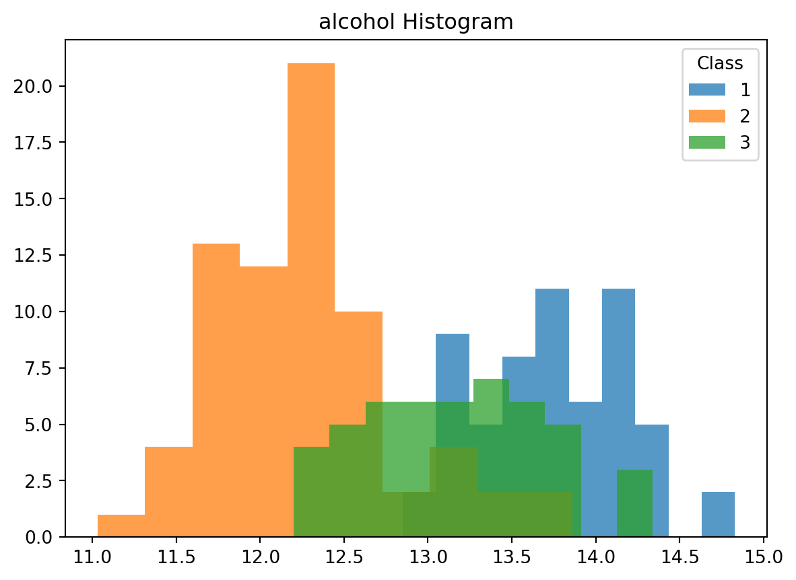
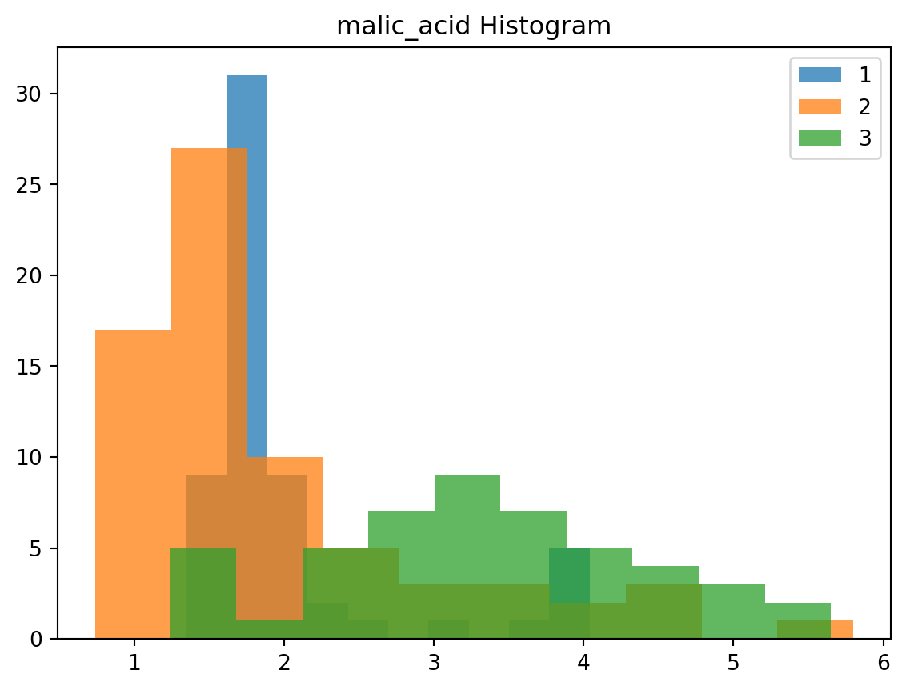
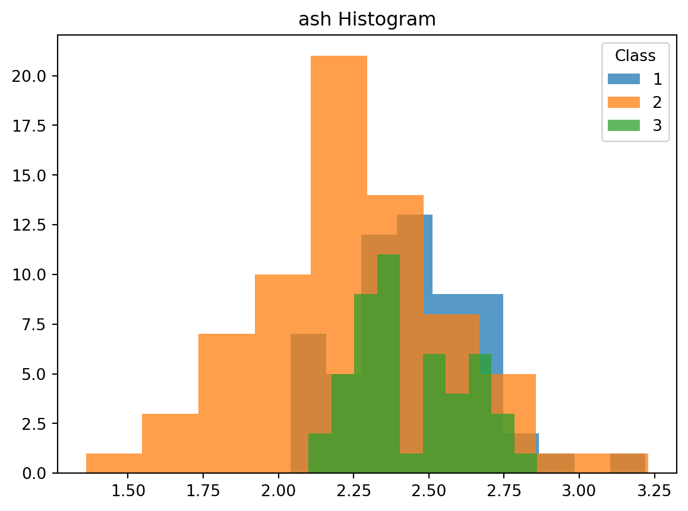
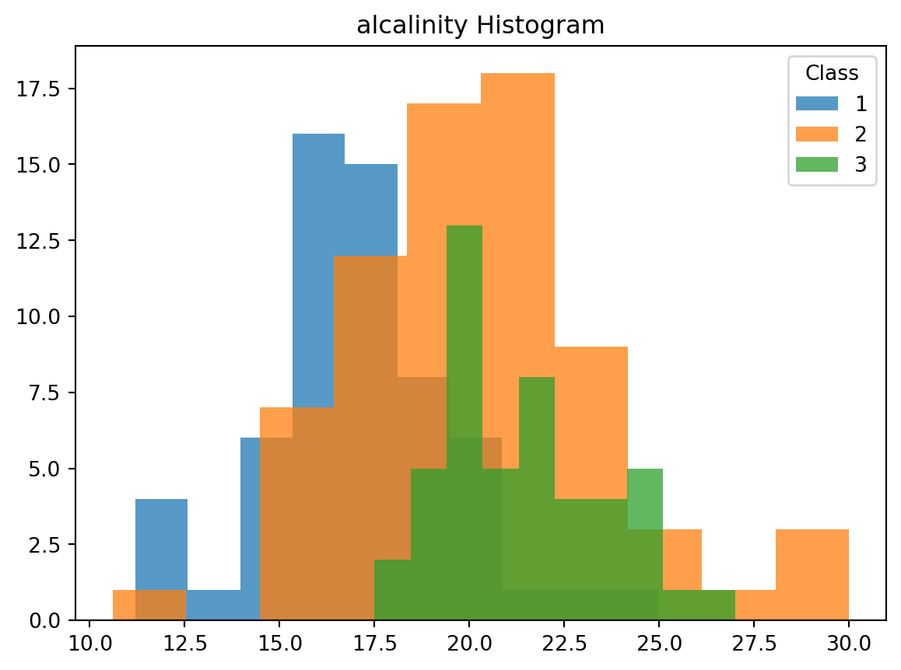
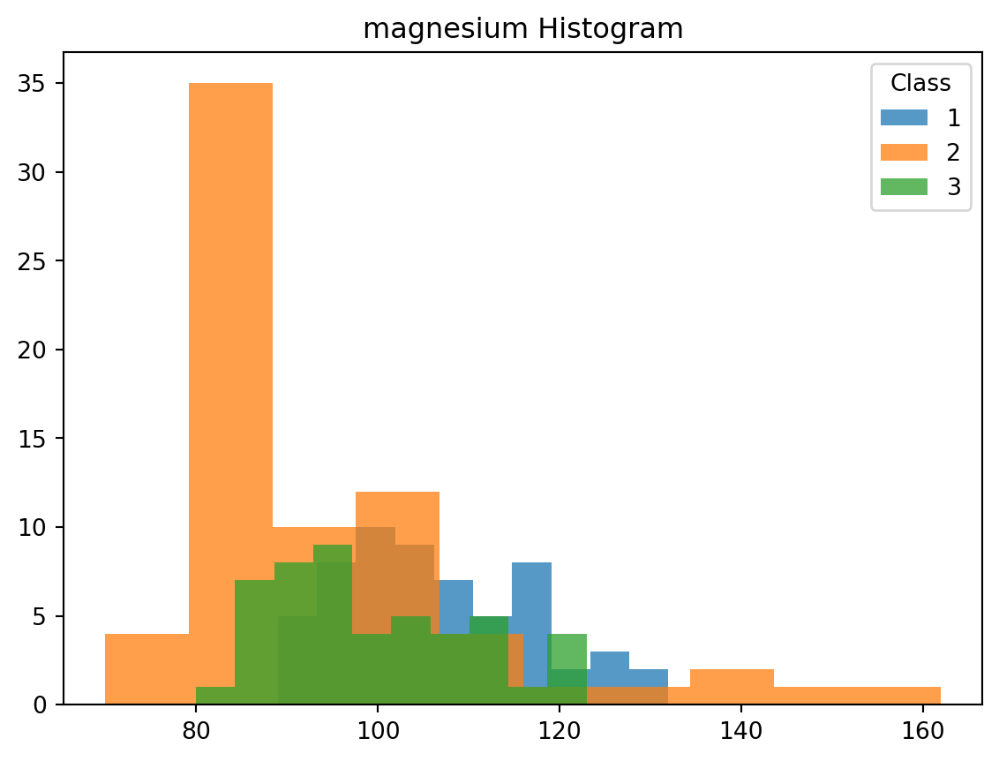
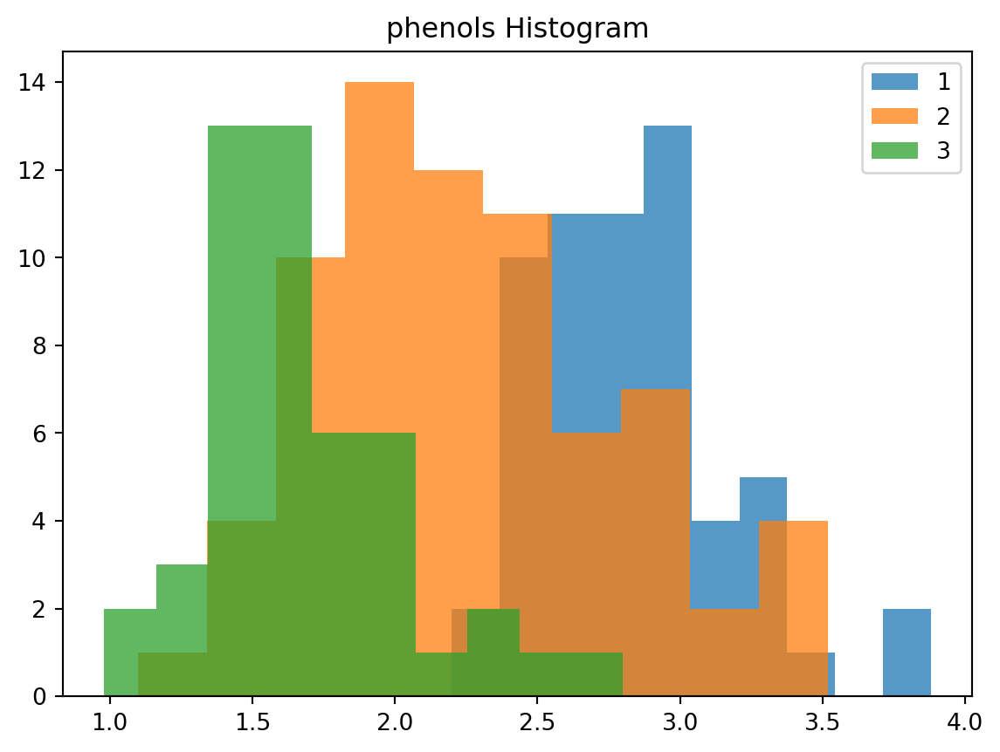
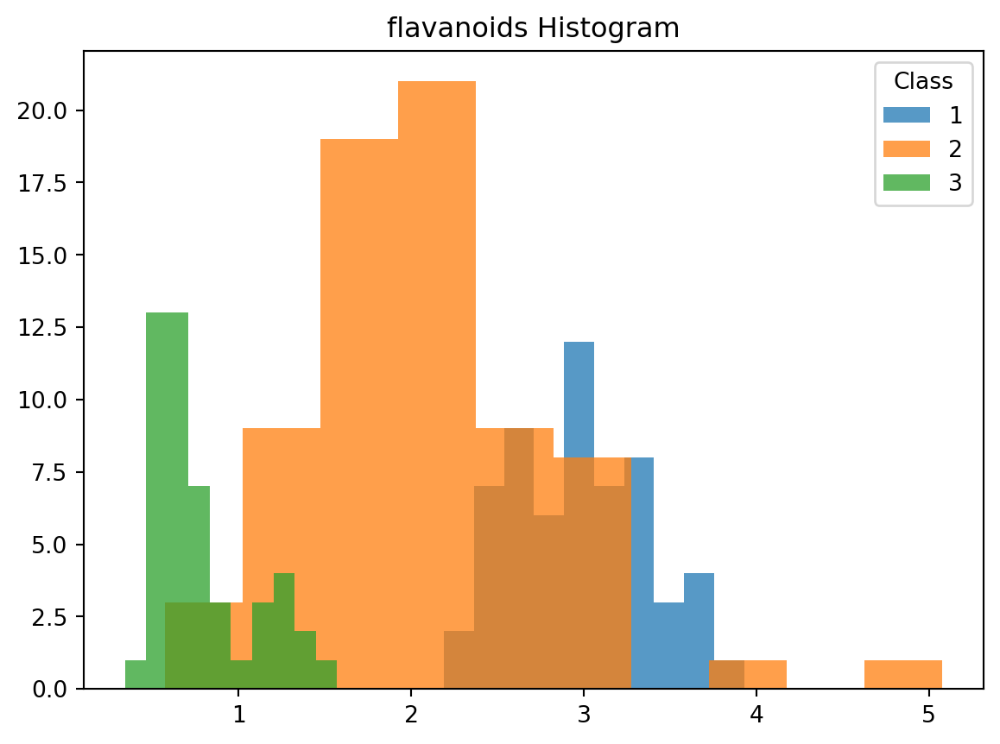
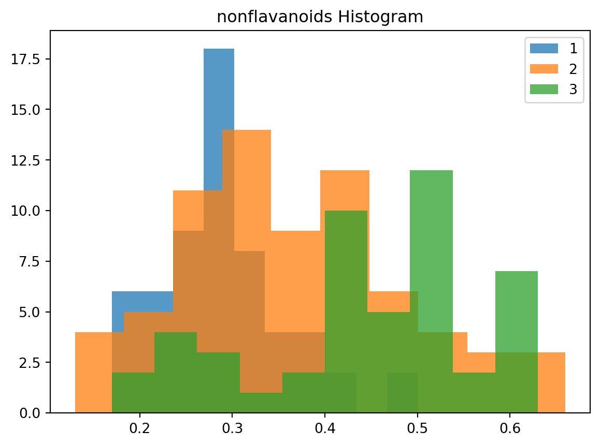
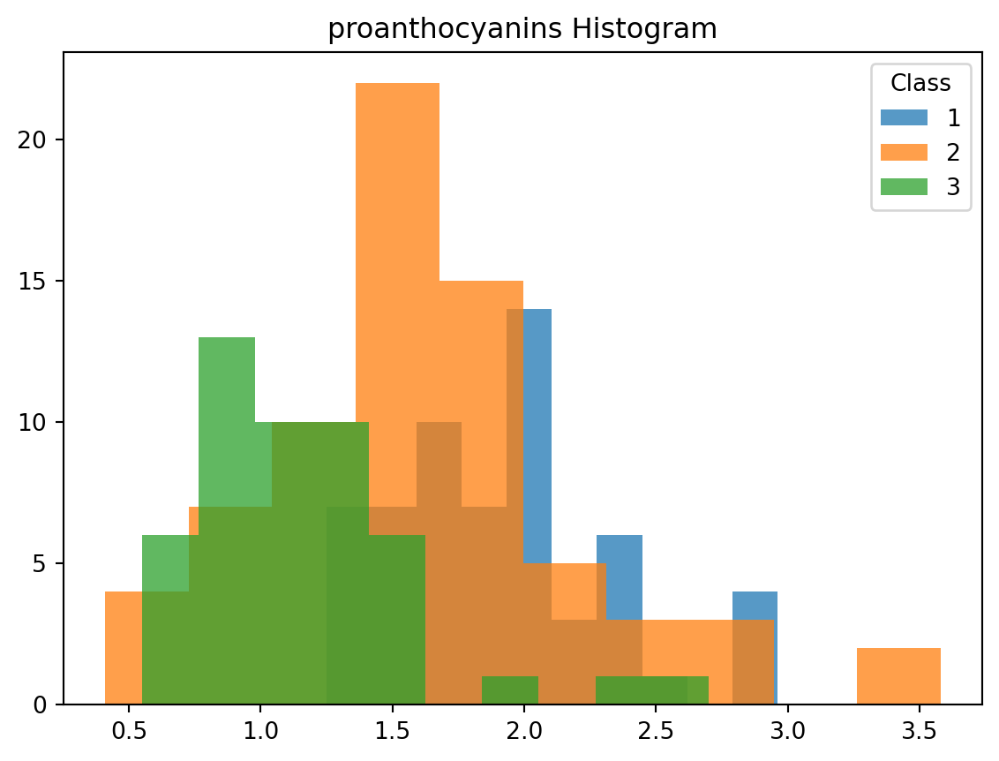
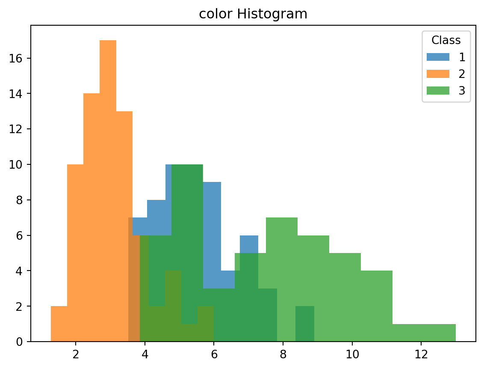
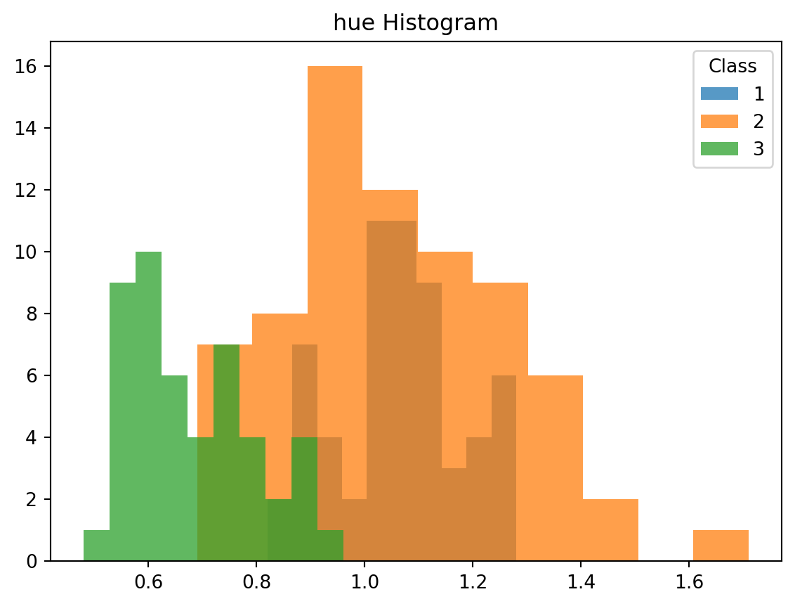
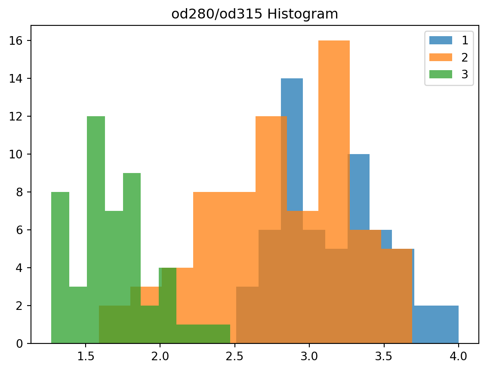
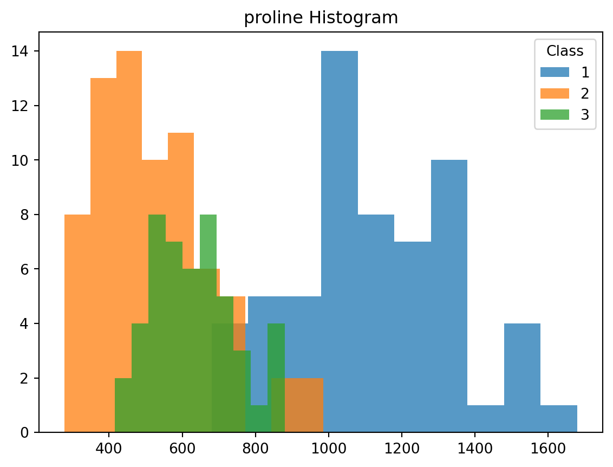
Data Preprocessing
X_train, X_test = train_test_split(wine_df, test_size=0.2, random_state=42)
y_train = X_train.pop("class")
y_test = X_test.pop("class")
X_train = (X_train - X_train.mean()) / X_train.std()
X_test = (X_test - X_test.mean()) / X_test.std()Multinomial Logistic Regression
model_softmax = LogisticRegression(solver='lbfgs')
model_softmax.fit(X_train, y_train)
training_accuracy = model_softmax.score(X_train, y_train)
y_pred = model_softmax.predict(X_test)
report = classification_report(y_test, y_pred)
print(report) precision recall f1-score support
1 1.00 1.00 1.00 14
2 1.00 1.00 1.00 14
3 1.00 1.00 1.00 8
accuracy 1.00 36
macro avg 1.00 1.00 1.00 36
weighted avg 1.00 1.00 1.00 36